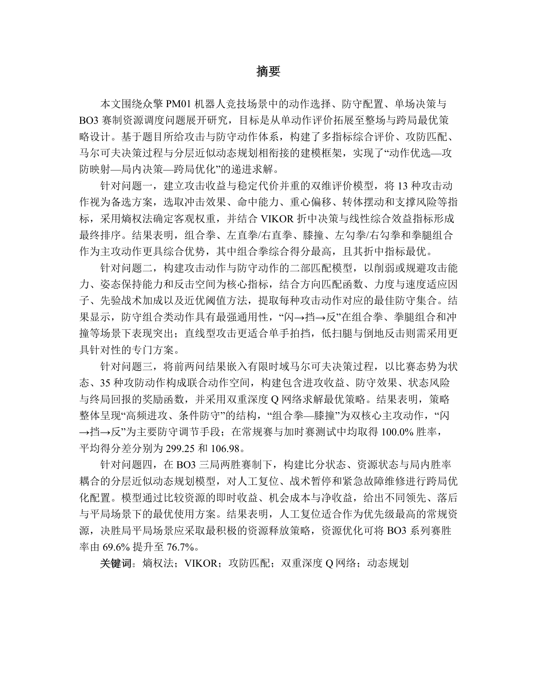

论文结构诊断
识别摘要、问题重述、模型假设、符号说明、结果验证、参考文献等关键模块是否完整。
识别摘要、问题重述、模型假设、符号说明、结果验证、参考文献等关键模块是否完整。
结合题型识别、约束条件、目标函数、求解方法和代码附件，评估方案可信度。
按竞赛历史评分偏好和论文风险项，输出特等奖、一等奖、二等奖、三等奖概率带。
每张卡片都是一个赛事入口，点击即可访问对应赛事官网或官方报名页。
全国大学生数学建模竞赛（国赛）
中文 · 官方站 M美国大学生数学建模竞赛（美赛）
English · COMAP G中国研究生数学建模竞赛
中文 · 研究生 MC高校数学建模挑战赛
中文 · 挑战赛 A亚太地区大学生数学建模竞赛
中英 · 亚太赛 S全国大学生统计建模大赛
中文 · 数据分析 T数据挖掘挑战赛
中文 · 数据挖掘 R数学中国数学建模网络挑战赛
中文 · 网络赛 51五一数学建模竞赛
中文 · 联赛 N全国大学生数学建模挑战赛
中文 · 挑战赛 H国际大学生数学建模竞赛
中英 · 赛氪页 Y全国大学生数学建模竞赛
中文 · 青年赛每份报告都会留下可追踪评分依据，适合赛前打磨、团队复盘和机构批量辅导。
支持论文、代码、数据、图片和附件说明。
抽取题型、变量、模型、算法和关键结论。
按比赛规则生成总分、维度分和扣分理由。
输出奖项概率、冲奖短板和优先修改项。
从建模逻辑到代码附件，从结果验证到论文呈现，自动拆解每份参赛论文的冲奖短板。
检查假设是否贴合题意、数据边界和现实约束，定位过强假设与缺失条件。
评估模型结构、算法组合和指标体系是否具备差异化，而不是套用模板。
核对计算结果、误差分析、敏感性验证和结论支撑，识别关键数值风险。
分析摘要、章节衔接、符号说明和结论表达，让评委快速理解核心贡献。
检查代码、数据、运行命令和附件说明是否足以复现实验与图表结果。
评估图表可读性、排版一致性、标注完整度和页面观感，减少展示型失分。
把数学建模作品的评价标准、自动评分步骤和竞赛规则库连成一张能力图，从上传材料到奖项估价形成完整闭环。
参考文档给出了 MathorCup 论文与电子档提交规范，系统可把这些规则转成可检查的格式评分项，并在报告中标记扣分风险。
下载参考 PDF
报名系统选择的题号必须与论文内容一致，否则取消评奖资格。
论文题目、摘要、关键词放在第一页，第二页为目录，正文起连续页码。
论文不能出现答题人身份、学校等个人信息，避免评审违规。
正文引用处用方括号编号，如 [1][3]，参考文献按引用次序列出。
附录应提供实际使用的软件名称、命令和全部源程序。
论文 PDF、承诺书、支撑材料和计算结果需按题号与队号命名。
拖动预估总分，查看系统如何把综合分映射为奖项概率。实际产品会结合比赛、赛题难度、论文风险项和队伍画像动态计算。
系统输出不只是一句“分数偏低”，而是把总分、奖项概率、扣分依据和修改优先级合在一张可复盘报告里。
综合评级：冲击一等奖区间
补充敏感性分析与误差解释，避免结果正确但论证不足。
完善代码运行命令、数据路径和图表生成说明，提高可复现性。
把摘要结论前置，明确回答四个问题的核心数值结果。
页面模拟了批量评阅看板，突出进度、风险、维度分和修订建议，而不是只给一个孤立总分。
模型假设缺少边界说明
敏感性分析与结果讨论断层
图表编号和正文引用不一致
从课程报告到建模竞赛，选手用它把更多时间留给模型、论证和复盘。
赛前两天帮我们把摘要、图表和引用问题全标出来，最后修改方向很清楚。
最有用的是六维评分和奖项概率，不再只凭感觉判断论文能不能冲奖。
课程报告的资料检索、排版检查和修改建议节省了不少时间。
带学生做训练营时，批量看风险项比人工逐篇翻格式快很多。
国赛前帮我们把代码可复现和图文风格统一检查了一遍。
它不会替我们建模，但能让我们快速发现论文表达和格式短板。
下载页已经配置 Windows、macOS、Linux 三个平台入口，适合后续接入版本号、安装包、更新日志和校验值。
当前为网站端演示，不会真正上传文件。你可以先选择比赛、题号和附件类型，后续网站只保留介绍、下载和预约入口，软件本体独立开发。